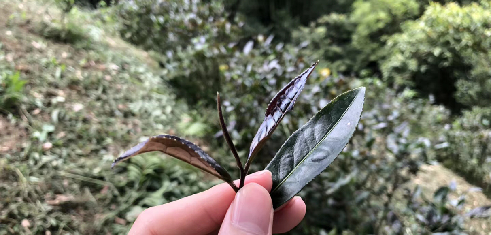
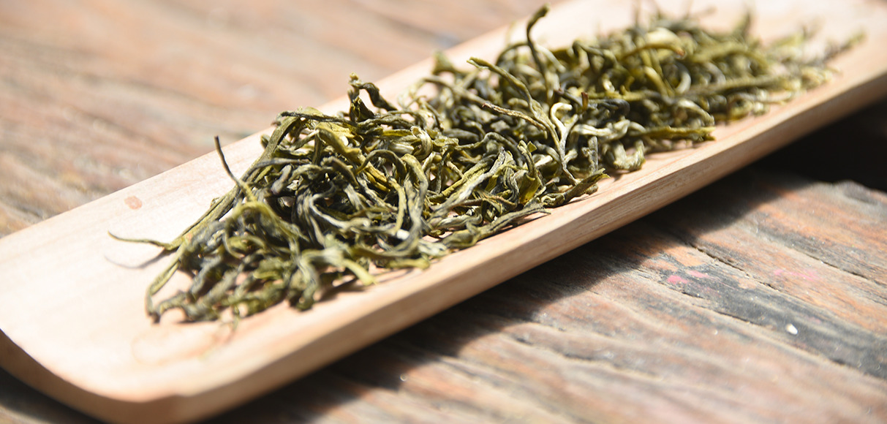
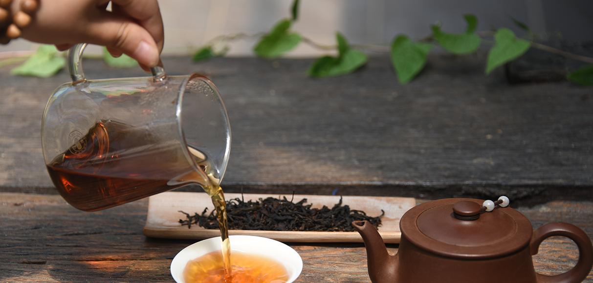

雨林紫鹃
海南五指山阿陀岭
全年
1985年，云南省农业科学院茶叶研究所专家在云南南糯
山群体茶园中发现一株芽、叶、茎都为紫色，制作绿茶
浸泡的茶汤也为紫汤的茶树。
1986年，云南农业科学院茶叶研究所专家周鹏举老师，
结合《红楼梦》中“紫鹃”姑娘的人性纯和人情美，
及茶树“紫尖”的特点，以谐音为这种独特的茶树取名“紫娟”。
遗传特性稳定“紫娟”茶树遗传特性稳定，品种性状纯一、无变异，具有抗寒、抗旱、抗病虫能力强的特点，扦插繁殖及移栽成活率高，适宜在温暖、湿润且阳光充足、土壤肥沃的生态环境中生长，可在海拔600—2000米的茶园推广种植。
遗传特性稳定“紫娟”茶树遗传特性稳定，品种性状纯一、无变异，具有抗寒、抗旱、抗病虫能力强的特点，扦插繁殖及移栽成活率高，适宜在温暖、湿润且阳光充足、土壤肥沃的生态环境中生长，可在海拔600—2000米的茶园推广种植。
遗传特性稳定“紫娟”茶树遗传特性稳定，品种性状纯一、无变异，具有抗寒、抗旱、抗病虫能力强的特点，扦插繁殖及移栽成活率高，适宜在温暖、湿润且阳光充足、土壤肥沃的生态环境中生长，可在海拔600—2000米的茶园推广种植。
妙自然茶业

0898-68547799

0898-68547799
18976154633

3011254924@qq.com

海南省五指山市通什镇什会村妙自然茶园
秒自然茶园微信公众号